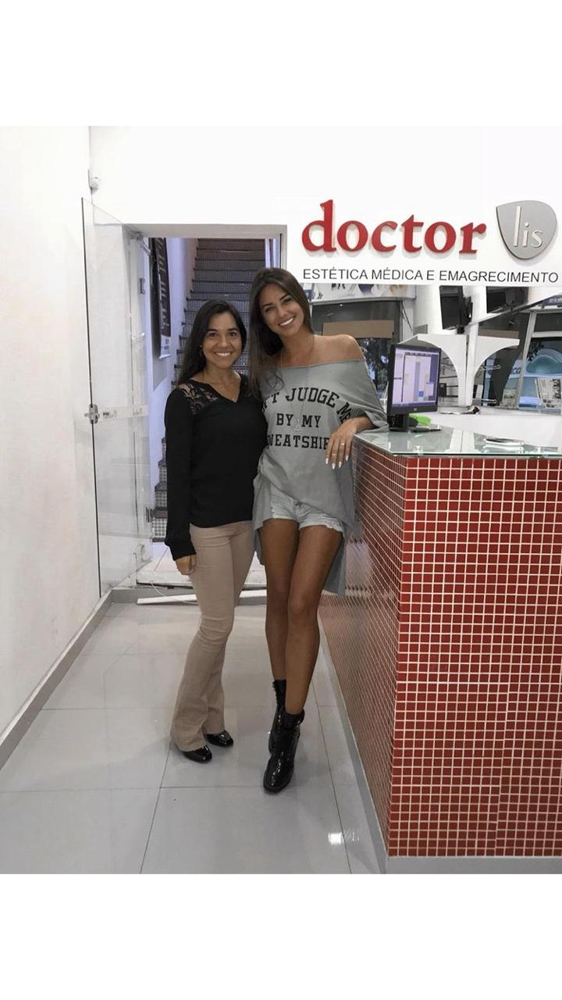

E como o sincronismo da vida é perfeito quando estamos em sintonia com as pessoas certas, consegui um encaixe exatamente hoje para você me atender depois de duas semanas na tentativas. Mas, essa consulta tinha que acontecer hoje! Prova viva de que coincidência não existe. Tudo acontece exatamente quando deve acontecer e as pessoas que vem sempre são as pessoas certas. E a única que coisa que quero dizer com tudo isso é que eu sou extremamente grata por todo esse trabalho que você vem fazendo comigo ao longo desses 365 dias. Gratidão
Oi Mari, Boa Tarde! Hoje tenho atendimento marcado com você e eu poderia deixar para falar mais tarde, no entanto, eu senti uma emoção tão boa em ver uma lembrança que subiu no meu facebook hoje. Há exatos 365 dias eu fiz um check-in ai na clinica. Como o tempo passa rápido e a gente não se da conta né? Já faz um ano que o universo te colocou na minha vida e graças as nossas sessões, conversas, agulhas e florais hoje eu não me vejo completamente diferente, venho me transformando, me redescobrindo e me reconhecendo como uma nova pessoa. E essa mesma já habitava dentro de mim, só que não fazia ideia da existência dela. "
Mari Como pode Estou até agora impressionado Sentia essas dores a 6 anos Você não tem noção do bem que você me fez , consegui dormir sem dor ... Hoje acordei flutuando Obrigado ainda é pouco
Mari Parece milagre como melhorou minha cervical !! Gente eu fico passada toda vez que eu faço acupuntura, com faz efeito ! Nem tive tempo de agradecer... Gratidão pelas suas mãos curandeiras rs.
"Mari, estou me sentindo ótima, nossa sai de lá renovada outra pessoas, é incrévil o poder das agulhas e o seu dom de fazer a gente acreditar que tudo vai da certo porque vai. Duas semanas que fiquei sem ir na consulta a minha vida deu uma reviravolta, fiquei desanimada e desacreditada e em 1hr vc fez eu renascer. Mari não te deixo nunca mais. Obrigada por tudo, você é incrível to muito feliz
Em 2017 recebi um presente da minha amiga, uma sessão de acupuntura com @mariana_acupuntura... que chega com um sorriso largo... uma paz que me acolhe... e me envolve... e desde então entendi que preciso me permitir e me presentear com essa 01 horinha que me traz benefícios por dias inteiros! Ah que agulhadinhas do bem... que equilibra... energiza... acalma! Mari... obrigada por aguentar minha lamentações... e por me ajudar a ser uma pessoas melhor! Me faz tão bem! #acupuntura #equilibrio #energia